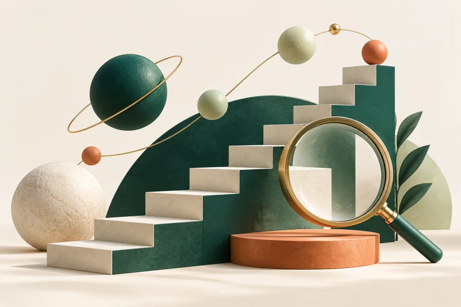

Technical foundations
Crawlability, indexation, internal linking, structured data, and performance priorities. Clear findings with a practical implementation order.
RAHEEL ALAM / SEARCH & AI VISIBILITY
Help people find the information, products, and services they actually need. Connect technical accessibility with useful content and clear brand signals.

THE WORKING PRINCIPLE
Help people find the information, products, and services they actually need. Connect technical accessibility with useful content and clear brand signals.
Discuss this service01 SCOPE & PRIORITIES
Crawlability, indexation, internal linking, structured data, and performance priorities. Clear findings with a practical implementation order.
Map customer questions to the right pages. Strengthen topical structure, reduce overlap, and make each piece of content serve a purpose.
Review entity clarity, answer structure, source credibility, and information consistency for AI-powered discovery. Visibility is a goal, not a guarantee.
Align location, product, and service pages with relevant intent. Connect local search information with an understandable offer.
02 / CLARITY AT HANDOVER
Deliverables are agreed around the scope, the tools, and the access available. A useful outcome includes a clear explanation of the decisions behind the work.
03 / GOOD QUESTIONS
No. Clear technical foundations and useful information still matter. GEO and AEO add another lens for how answer engines interpret, summarize, and reference content.
Timing varies with the site, the market, competition, and implementation. We agree on a review cadence and track changes without promising a fixed ranking date.
Yes. We can scope technical and WordPress implementation alongside the strategy, with clear boundaries for work requiring another developer or platform owner.
GOOD WORK STARTS WITH A CONVERSATION
Bring the website, the challenge, and the ambition. I’ll bring a plan for what happens next.